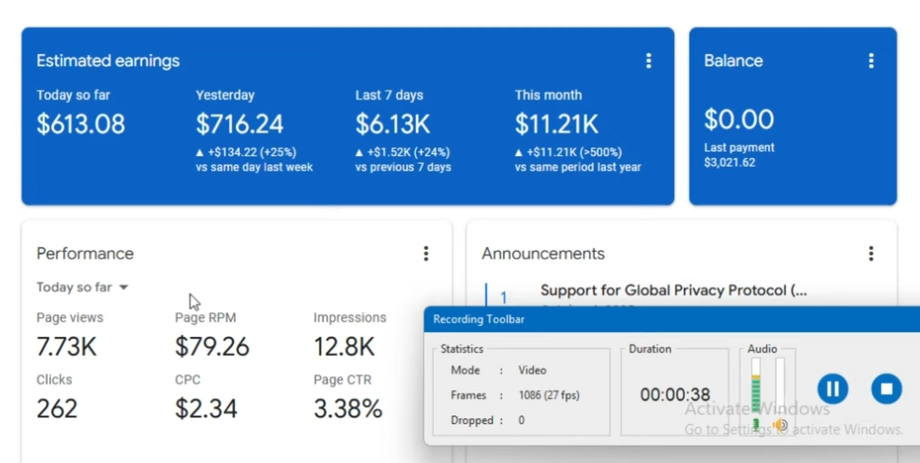

이 자막의 중심 문장은 단순하다. 구글 애드센스 수익을 올리는 핵심은 RPM이나 CPC 자체가 아니라 트래픽 소스의 조합이라는 것이다.
영상 속 화자는 블로그, 유튜브, 구글 관련 제품으로 돈을 버는 방법을 말한다. 처음에는 높은 RPM과 CPC를 보여준다. 그리고 곧바로 “두 개의 트래픽 소스”, “프록시”, “자동화된 방법”이라는 표현이 나온다. 이 흐름이 중요하다. 숫자는 결과처럼 보이지만, 실제 질문은 그 숫자를 만든 방문자가 어디에서 왔는가에 있다.
RPM과 CPC는 왜 사람을 끌어당기는가
RPM은 1,000회 노출당 예상 수익이고, CPC는 클릭당 비용이다. 수익형 블로그나 유튜브 채널을 운영하는 사람에게 이 두 숫자는 매우 강한 신호다. 낮은 방문자 수로도 높은 수익을 만들 수 있다는 기대를 주기 때문이다.
하지만 높은 RPM과 CPC는 언제나 좋은 신호만은 아니다. 특정 지역, 특정 키워드, 특정 광고주 경쟁, 일시적인 클릭 패턴, 비정상 트래픽이 모두 숫자를 밀어 올릴 수 있다. 그래서 대시보드의 높은 숫자만 보고 방법을 따라 하면 위험하다. 숫자보다 중요한 것은 그 숫자가 지속 가능한 방식으로 만들어졌는지다.

트래픽 소스라는 말 뒤에 숨은 질문
자막에서 가장 중요한 단어는 “트래픽 출처”다. 애드센스에서 트래픽은 단순히 방문자 숫자가 아니다. 검색에서 온 사람인지, 추천 링크에서 온 사람인지, 소셜에서 온 사람인지, 광고로 유입된 사람인지, 자동화된 흐름인지에 따라 의미가 완전히 달라진다.
애드센스에서 무효 트래픽은 계정 전체를 흔들 수 있는 문제다. 클릭을 유도하거나, 자동화로 방문과 클릭을 만들거나, 품질이 낮은 트래픽을 반복적으로 보내면 단기 수익은 올라갈 수 있어도 장기적으로는 광고 계정의 신뢰가 무너진다.
프록시와 자동화 언급을 조심해야 하는 이유
자막에는 “프록시도 있고, 자동화된 방법도 있습니다”라는 문장이 나온다. 이 문장은 수익형 콘텐츠에서 매우 강한 경고 신호다. 프록시는 접속 위치나 요청 경로를 바꿀 수 있고, 자동화는 사람이 직접 보는 흐름처럼 보이게 만들 수 있다. 둘 다 합법적인 기술 용도가 있지만, 광고 수익과 결합하면 의심받기 쉽다.
블로그 운영자는 이런 방식에 기대기보다 검색 의도에 맞는 콘텐츠, 명확한 출처, 실제 독자 체류, 자연 유입을 먼저 만들어야 한다. 광고 플랫폼이 원하는 것은 숫자가 아니라 광고주에게 의미 있는 사용자다. 사용자가 실제로 관심을 갖고 읽고 클릭하는 흐름이 없다면 수익은 오래가지 않는다.
결제 인증은 증거이지만 설명은 아니다
영상은 결제 페이지와 잔액을 보여주며 신뢰를 만든다. 결제 인증은 시청자의 의심을 줄이는 데 효과적이다. 그러나 결제 화면은 “돈이 들어왔다”는 사실을 보여줄 뿐, 그 돈이 어떤 방식으로 만들어졌는지, 정책 위반 가능성은 없는지, 다음 달에도 유지되는지까지 설명하지 않는다.
그래서 이런 콘텐츠를 볼 때는 결제 인증보다 방법의 구조를 읽어야 한다. 유입 경로가 명확한가. 콘텐츠 품질과 검색 의도가 맞는가. 광고 클릭을 직접 또는 간접적으로 유도하지 않는가. 자동화와 프록시가 수익 모델의 핵심으로 쓰이지 않는가. 이 질문들이 결제 화면보다 중요하다.
트래픽 소스, 검색 키워드, 유입 국가, 페이지 체류 시간, 광고 클릭률, 반복 방문 패턴을 함께 봐야 한다. 한 숫자만 튀는 수익은 자랑거리가 아니라 점검 대상일 수 있다.
원문 자막 기록
아래는 이번 포스팅의 바탕이 된 원문 자막이다. 문장 자체가 번역체라 어색한 부분이 있지만, 수익형 콘텐츠의 설득 흐름을 확인하기에는 충분하다.
결론
이 영상은 “애드센스 수익을 올리는 방법”처럼 보이지만, 실제로는 수익형 콘텐츠가 숫자, 인증, 연락처, 자동화 언급을 어떻게 섞어 신뢰와 호기심을 만드는지 보여준다. 운영자가 배워야 할 것은 비법이 아니라 경계선이다.
애드센스에서 오래 살아남는 방법은 트래픽을 속이는 것이 아니라 트래픽을 설명할 수 있게 만드는 것이다.
전체 글 요약 검색
구글 애드센스 수익 급증 영상은 높은 RPM과 CPC보다 트래픽 소스, 프록시, 자동화 언급의 위험성을 먼저 확인해야 하는 사례다.
전체 요약문으로 구글 검색하기